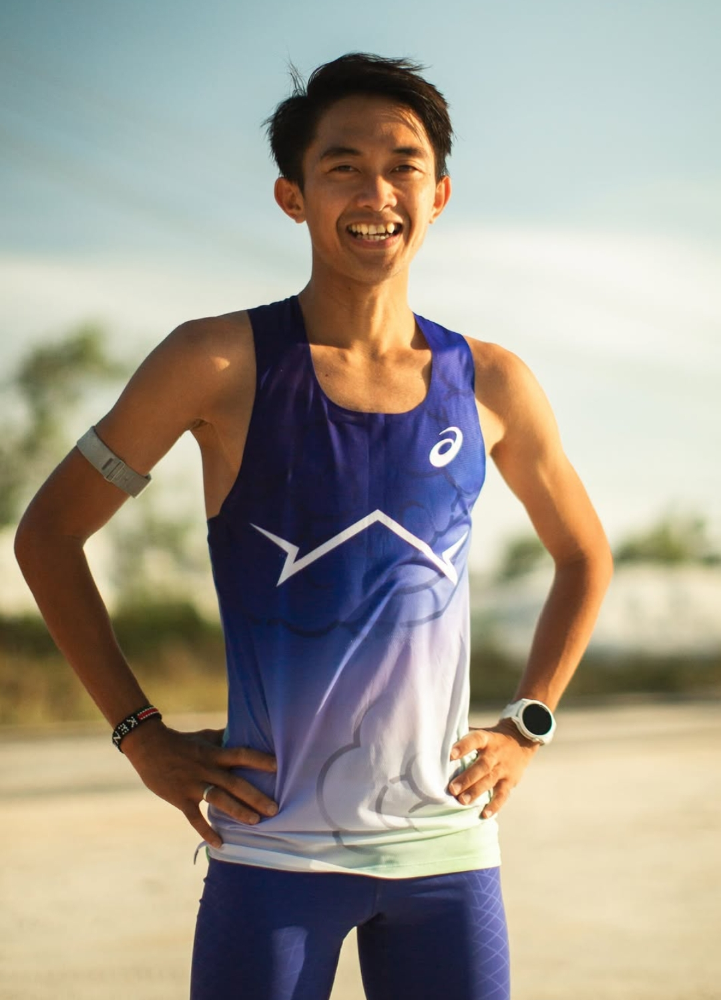

Robi Syianturi kini diakui sebagai salah satu pelari jarak jauh dan menengah terbaik yang pernah dimiliki oleh Indonesia. Dengan daya tahan paru-paru yang luar biasa, mentalitas baja, dan ayunan langkah yang konsisten, atlet kelahiran 8 Januari 1998 ini terus menjadi ujung tombak Indonesia di berbagai ajang kejuaraan atletik dunia. Dari lintasan lari di Belitung hingga aspal jalanan di Australia dan Jepang, Robi telah membuktikan bahwa keterbatasan di masa lalu bukanlah penghalang untuk mengukir sejarah baru bagi olahraga Tanah Air.
Perjalanan Robi menuju puncak kejayaan atletik Indonesia tidaklah terjadi dalam semalam. Robi lahir dan tumbuh di lingkungan yang sederhana di Provinsi Kepulauan Bangka Belitung. Sebelum mengenal dunia atletik secara profesional, ia sempat bermain sepak bola. Namun, bakat alaminya di lintasan lari baru benar-benar ditemukan ketika ia duduk di bangku SMA (SMAN 1 Manggar). Adalah Pak Dar, seorang guru olahraga di sekolahnya, yang pertama kali menyadari potensi paru-paru dan ketahanan otot Robi yang sangat luar biasa untuk ukuran anak seusianya. Melihat bakat mentah tersebut, Pak Dar terus mendorong Robi untuk mengikuti lomba lari tingkat kabupaten. Demi mempersiapkan diri dan membangun staminanya, Robi bahkan rela menempuh lari sejauh 7 kilometer setiap harinya. Tanpa fasilitas mewah dan hanya berbekal tekad, ia berhasil membuktikan kemampuannya dengan meraih podium. Kemenangan-kemenangan kecil di tingkat daerah inilah yang membuka jalannya untuk dibina secara lebih serius dan akhirnya dilirik oleh pemandu bakat nasional (PB PASI).
Masuk ke Pemusatan Latihan Nasional (Pelatnas), Robi ditempa dengan sangat keras. Ia difokuskan untuk turun di nomor-nomor lari jarak jauh seperti 5.000 meter, 10.000 meter, hingga Half Marathon (21,1 km). Kerja kerasnya di bawah bimbingan pelatih dan federasi membuahkan hasil manis di kancah internasional.Pada ajang SEA Games 2023 di Kamboja, Robi sukses menyumbangkan medali perunggu di nomor lari 5.000 meter putra dengan catatan waktu 14:43.44. Prestasinya terus melesat di tahun yang sama; saat berlaga di Asian Games 2023 di Hangzhou, Tiongkok, ia berhasil mencetak Personal Best (rekor pribadi terbaik) di nomor 10.000 meter dengan catatan waktu 29:55.31 dan finis di posisi ke-8 Asia, sebuah pencapaian yang sangat prestisius mengingat ketatnya persaingan atletik di level Asia. Ia juga menorehkan prestasi membanggakan pada FISU World University Games di Chengdu. Kejayaan di ajang multicabang olahraga berlanjut. Pada SEA Games 2025, Robi membuktikan peningkatan performanya dengan sukses menyumbangkan medali emas, sebuah momen emosional yang tak hanya membanggakan Indonesia, tetapi juga kampung halamannya di Belitung. Di tingkat nasional pada tahun 2026, Robi juga berhasil menjuarai Jakarta International Marathon (JAKIM), mengalahkan puluhan ribu pelari lainnya.
Salah satu titik puncak dalam karier profesional Robi terjadi pada awal Juli 2024 saat ia berlaga di Gold Coast Marathon, Australia. Dalam ajang internasional bergengsi tersebut, Robi turun di nomor Half Marathon. Dengan strategi pacing yang sempurna dan fisik yang prima, Robi menyentuh garis finis dengan catatan waktu impresif 1 jam 4 menit 48 detik (01:04:48). Catatan waktu ini bukan sekadar personal best, melainkan sebuah sejarah baru bagi atletik Indonesia. Robi berhasil memecahkan Rekor Nasional (Rekornas) Half Marathon yang sebelumnya dipegang oleh legenda atletik Indonesia, mendiang Eduardus Nabunome. Rekor milik Eduardus yang menorehkan waktu 1 jam 5 menit 43 detik tersebut telah bertahan tak terkalahkan selama 27 tahun (sejak 1997). Pemecahan rekor ini mengukuhkan status Robi sebagai raja lari jarak jauh Indonesia di era modern.
Di balik segala prestasinya, Robi dikenal sebagai figur yang sangat disiplin dalam menjaga pola makan, jadwal istirahat, dan porsi latihan rutin. Ia menyadari bahwa tubuhnya adalah aset utama. Kariernya yang terus menanjak juga tak lepas dari dukungan para sponsor. Sejak tahun 2022, Robi mendapat dukungan penuh dari ASICS Indonesia. Dukungan ini memungkinkannya untuk rutin mengikuti berbagai kejuaraan World Marathon Majors seperti Tokyo Marathon 2024 dan mendapat akses sepatu berteknologi tinggi,seperti seri ASICS GEL-KAYANO sering digunakannya untuk masa pemulihan (recovery run).
Kisah Robi Syianturi adalah bukti nyata bahwa mimpi besar bisa lahir dari daerah kecil. Dari anak sekolah yang berlari 7 km setiap hari di Belitung, kini namanya terukir abadi di buku rekor atletik nasional. Dedikasi, konsistensi, dan kerendahan hatinya terus memotivasi generasi muda dan ribuan pelari amatir di seluruh Indonesia untuk tidak pernah takut menembus batas kemampuan diri.